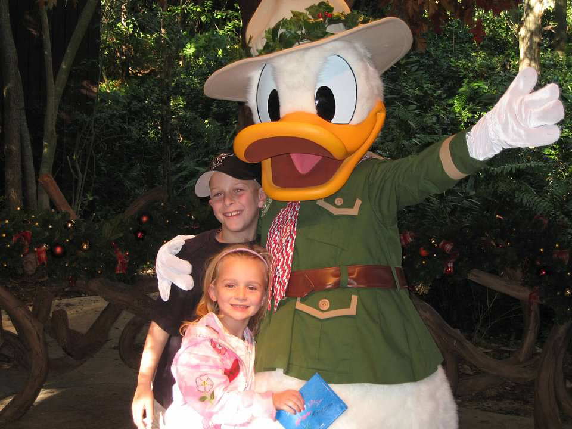
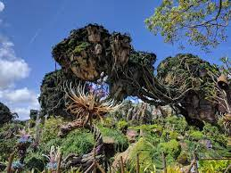

Animal Kingdom
Animal Kingdom is the most different of all the parks. It is my least favorite park as they focus more on the animals, and less on the fairytale aspect. I love the other parks because of the experience of stepping into their movies. Animal Kingdom instead gives the experience of stepping into a safari. A staple of Animal Kingdom is their famous Kilimanjaro Safari that is home to over 30 different species. Below is a picture of me and my brother with safari themed Donald Duck!
A couple of years ago Disney built a new land inside of Animal Kingdom, Pandora, the setting of the famous movie Avatar. I believe that they built this new and exciting land at this park because they needed to add more hedonic and experiential value. Before the addition of Avatar Land, Animal Kingdom was the only land to have no updates since it's opening compared to its counterparts. By adding Avatar Land, Animal Kingdom was able to compete with the other parks with two new rides. Below is a picture of what the new Pandora land looks like!
